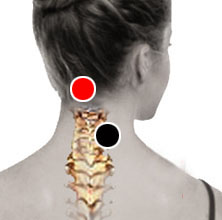

Serratias
Pares
plexo cervical - bulbo
polo - uretra

Generalidades:
Pertenecen a la familia de las Enterobacterias, son bacterias aeróbicas gramnegativas. Su habitat natural es el agua y suelos. Dificilmente son capaces de infectar a humanos en circunstancias particulares: heridas abiertas, vías respiratorias y aparato urinario. Las especies patógenas en humanos son S. Fontícola (plexo cervical - bulbo) y S. Marcescens (polo - uretra).
Otras complicaciones que se pueden presentar son endocarditis, bacteremia, artritis y osteomielitis, meningitis, infecciones urogenitales, conjuntivitis (por uso de lentes de contacto).
Transmisión:
Heridas abiertas, vías respiratorias, uso de catéteres y otros dispositivos (infección en hospitales).